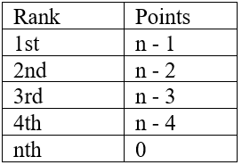

Decision Science
In this section, you will learn the following:
Game Theory
- Study of strategic interactions between the players in situations that contains a set of rules and a set of outcomes
- Consists of a set of players and their own set of actions/moves
- Each player receives a payoff depending on their actions
Terminologies
- Strategy - a sequence of actions
- Game - any situation that depends on the players and their strategies
- Players - the decision makers
- Payoff - what the player recieves depending on their strategy
Classification of Games
-
Simultaneous vs. Sequential
- Simultaneous - each player has one move and is done simultaneously
- Sequential – players do not move at the same time and they have different actions
-
Perfect vs. Imperfect
- Perfect – players are informed regarding their decisions
- Imperfect – players are not informed regarding their decisions
-
Complete vs. Incomplete
- Complete – strategies, payoffs, player information are known to the players
- Incomplete - strategies, payoffs, player information are not known to the players
Normal Game
A representation of a game where the players and their strategies are listed along with their respective payoffs
Example: The Prisoner's Dilemma in Normal Form Read the captions below the image to understand what's happening!
Let C to be confess, and R to remain silent
If both confess, both will go to jail for 10 years
If one will confess, the player will be sent to jail for 1 year while the other player will be sent to jail for 25 years.
If one will confess, the player will be sent to jail for 1 year while the other player will be sent to jail for 25 years.
If one will confess, the player will be sent to jail for 1 year while the other player will be sent to jail for 25 years.
If both will remain silent, both of the players will be sent to jail for three years.
Digital Communication
In this section, you will learn the following:
Cryptography
Cryptography refers to the method of protecting information and communications with the use of codes that only those for whom the information is intended can read and process it.
The goal of cryptosystem is to relay the information without anyone else being able to know it.
Cryptography concerns itself with four major objectives:
- Confidentiality - this objective aims to make sure that no third party can read the message intended for someone.
- Integrity - this means that the information or message cannot be altered by any third party.
- Authenticity - both the receiver and sender can confirm each other’s identity and the origin or destination of the information
- Non-Repudiation - the sender of the message cannot deny at a later stage her intentions in the transmission of the message.
Cryptography works this way:
- Plain text (original text) to Ciphertext = the process is called encryption
- Ciphertext (encrypted message) to plain text = the process is called decryption
Ciphers
The Pigpen Cipher
This kind of cipher uses symbols instead of letters. Instead of replacing each letter with another letter, letters are replaced by symbols. This kind of cipher has been used my many groups like the Freemasons, a secret society in the 18th century.

To encrypt, Replace the letter with the corresponding symbol. The symbols are assigned to a specific letter
To decrypt, replace the symbol with its corresponding letter.
For more information, refer to the video below by Buzzy Martin
The Caesar Cipher
Also known as shift cipher, it is one of the simplest forms of encrypting a message. This is a type of substitution cipher where one letter in the original message or the plain text is replaced with a letter corresponding to a certain number of letters shifted up or down in the alphabet.

Note that the fourth letter of the alphabet, namely D, is for A and so with the others.
The Vigenere Cipher
This cipher is a polyalphabetic substitution or a cipher that is based on substitution using multiple substitution alphabets. The encryption process is done using Vigenere square or Vigenere table. An example of this table is shown below

An example of the table
The Vigenere Cipher is rather difficult to understand. Why not watch some videos by the community to further understand this? The video is provided by Buzzy Martin
That's it for ciphers! It's like playing a game. If you would like to flex your skills, download the attachment below and play with your friends!
Encryption
There are two basic techniques of encryption
Symmetric Cryptography
- This a type of encryption where there is only one key (secret key). It is used in both encrypting and decrypting electronic messages. This method is different from asymmetric encryption where there is a pair of keys (one public and one private) is used to encrypt and decrypt messages.
- It uses a key that can either be a number, a word or a string of random letters. It is combined with a plain text of a message to change the content in a specific way. The sender and the receiver know the secret key that is used in encrypting and decrypting the messages.
- One fallback of this type of encryption is that all parties involved need to change the key to encrypt the message before they can decrypt it.
- Also known as secret key encryption.

Watch the video below to understand more! Video by Zariga Tongy
Asymmetric Encryption
- It is also known as public key cryptography.
- It uses two keys to encrypt a plain text. A public key is available for everyone who might want to send a message to a person. The second private key is kept as a secret so that you are the only person to know.
- A message that is encrypted using a public key can only be decrypted using private key. A message encrypted by a private key can be decrypted by a public key.

Watch the video below to understand more! Video by Simply Explained - Savjee
Data Signatures
It is a process that makes sure that the contents of the message have not been changed. When you, the server digitally sign a document, you add a one-way encryption of the message content using your own public and private key pair. The client can still read it but digital signature creates a “signature” that only the server’s public key can decrypt. The client, using you public key can validate the sender as well as the integrity of the message contents.
How does it all work?
According to InstantSSL:
- Alice selects the file to be digitally signed or clicks on 'sign' in her email application
- The hash value of the file content or the message is calculated by Alice's computer
- This hash value is encrypted with Alice's Signing Key (which is a Private Key) to create the Digital Signature.
- Now, the original file or email message along with its Digital Signature are sent to Bob.
Consider a scenario where Alice has to digitally sign a file or an email and send it to Bob:
- Decrypt the Digital Signature using Alice's Public Key
- Calculate the hash of the original message
- Compare the (a) hash it has computed from the received message with the (b) decrypted hash received with Alice's message.
- Any difference in the hash values would reveal tampering of the message.
After Bob receives the signed message, the associated application (such as email application) identifies that the message has been signed. Bob's computer then proceeds to:

Due to the complexity of the topic, we hand-picked some videos that would help you learn the topic!
This first video is by the folks over at Adobe!
The second video is by a YouTube Channel known as Sunny Classroom!
For some exercises, press this button!
Thats about it! Information compiled by Alicia Dela Rosa
Mathematics as a Language
In this section, you will learn the following:
When we talk about the aspects of math, we always think of number-based problems and problem solving. But clearing things out, numbers are just symbols that we use in identifying a quantity of a particular scenario. We can say that Mathematics is a Language for quantifying objects in order to predict or conclude the right amount we want to have. Although Mathematics of Language started on the stages of quantifying, this evolved in predicting, estimation, observation, deduction of patterns, and many more which gives us humans better opportunity in quantifying results. To put it this way, us humans use math as a daily basis in life for quantifying and we do not realize that Mathematics covers a lot more of what we do in our daily lives and one which is using Mathematics. as a Language
Definition of Language
But before we delve deeper into Mathematics of Language let us talk about what the meaning of Language is and how can it will be considered as a language. When we say Language, it is a systematic means of communicating by the use of sounds or conventional symbols. It is the code we use to express ourselves and communicate with others. Moreover, we cannot just say that any sound can be a language, language also has components in order to be considered as a language
Components of Language
The following components are the basis of consideration in labelling sounds and symbols as a language:
- Vocabulary of symbols or words - The language should be rich in words and symbols in order to express more feelings and opinions.
- Grammar or rules of how these symbols are used - The language should have a systematic and organized way of expressing its words and symbols
- Community of people who use and understand these symbols - The language should also be used by a lot of people in order to understand one another
- Range of meanings that can be communicated with these symbols - The language can be used in diverse communications (informal, formal, persuasive, & etc.)
These components are found in the English Language we use as our international language but what we do not know is that these components are also found in Mathematics of Language.
Elements of Mathematics of Language
In order to further understand our knowledge towards Mathematics of Language, Here are the elements that we would be using in order to achieve this kind of language.
- Numerals: 1234567890 - variables used for quantifying
- Operations: ±×÷∞=≠~<≥≤∓≅≡∀ √ ∜∪ ∩ - variables used for operating actions
- Expressions: ∅ % ∃ ∄ ∈ ∋α β γ δ ε ϵ θ ϑ π μ ρ σ τ φ ω - variables used in identifying what kind of expression is the given solution (statistical, geometry, trigonometry, arithmetic, algebra, etc.)
Watch the video below by English Lessons with Adam!
Propositional Calculus
Before we start this lesson, you may be wondering on how we jumped from Mathematics of Language to Calculus. Do not worry. in Mathematics, the term "Calculus" is used to express a particular method or system of calculation or reasoning. Just to clarify, we are still delving towards Mathematics as a Language, not with Mathematical equations
Definition of Propositional Calculus
Have you ever heard of Propositional Calculus? I can guarantee that you are here to understand more of it or just simply bumped on this topic in our website. Even if you have not heard of this topic before in math, you are actually applying this in your daily activities in life. Let me expound it for you, Propositional Calculus is a method in Mathematics of wherein we identify whether the propositions/statements are considered TRUE or FALSE. When we talk about Propositions, these are complete declarative sentences that are either TRUE or FALSE, but not both. Meaning, that these statements can never be a question or a command.
Examples
President Obama is a former president of the United States of America - TRUE
1 + 1 = 2 - TRUE (Numerical Form of proposition)
2 + 2 = 5 - FALSE
Now let us try to identify whether the statements are considered propositions or not
Are you going home later? - Not proposition (question form)
Bring this home for me. - Not proposition (command form)
X + 1 = 2 - Not proposition (both true or false)
X + Y = Z - Not proposition (both true or false)
In terms of Mathematics of Language, we would be denoting all propositions with capital letters of the English Alphabet (But most of the time we use P,Q,R,S, and T).
Connectives and Compound Prepositions
One type of operation we used in Propositional Calculus is the Propositional Connective wherein we combine two propositions to yield a new proposition whose truth value depends only on the truth values of the two original propositions. Wherein the combination of two propositions may result to a one new proposition that is either TRUE or FALSE and we call this combined propositions due to connective proposition as Compound Proposition.
Operations
The following below are the operations used in Propositional Connectives in order to create Compound propositions
To further understand the operations from Table 2, here are some supplementary videos that you can access online for free on how to use the following operations above
In-depth introduction to Propositional Connectives
Discussion of Operations for Propositional Connectives
Discussion of Truth Table
Supplementary Materials and Worksheets
To help you in understanding propositional calculus, here are some worksheets and reviewers that you can access to evaluate and assist your knowledge about this topic
Forms of Compound propositio
Compound proposition discussed on the last subunit is considered to be a combined propositions (two or more) due to Propositional Connective. Moreover, there are certain situations that even compound propositions are put together by a connective proposition to form a newer compound proposition. In certain circumstances, the newly formed connective proposition can result into three(3) forms and the following are;
- Tautology - Always TRUE/All truth values are TRUE under all circumstances
- Contradiction - Always FALSE/All truth values are FALSE under all circumstance
- Contingency - Neither TRUE or FALSE/ All truth values vary (TRUTH or FALSE) under all circumstances
Just to clarify about the forms of Compound proposition, this always apply to any kinds of compound propositions that are subjected to Propositional Connective (whether the first execution until the last execution)
To further understand the forms of Compound proposition, here are some supplementary videos that you can access online for free on determining what form of Compound proposition is present from a given propositional problem:
Social Choice Theory
Combines the different choices and preferences of individuals in a group into a single preference
Terminologies
Fairness Criterion
A mathematical statement on our expectations for a voting system. Should be true according to common sense, but should not always be true in reality
Some popular voting methods
Plurality
Fairness Satisfaction:
Watch the video below for some additional info!
Majority
Examples:
1. C is the winner since that candidate have the most of the votes (7 + 4 = 11; more than 50%).
2. D has the most votes but cannot be the winner under the majority rules (7 out of 19).
Borda Count

Fairness satisfaction
Watch the video below for additional info! It is recommended that you watch this because it can be quite difficult to understand
Condorcet Method
Watch the video below by James Hamblin for additional info and a how-to!
Runoff Voting or Hare System
Watch the video below by Mathispower4u to understand more!
That's about it! Thank you for reading! Information compiled by Nina Yu